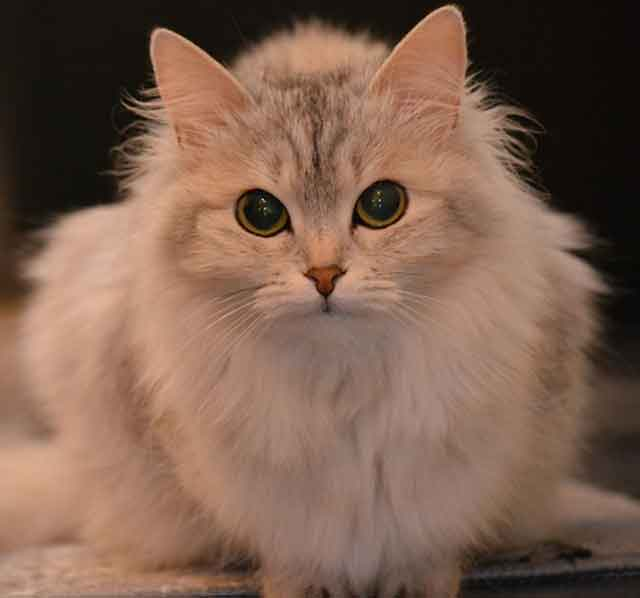
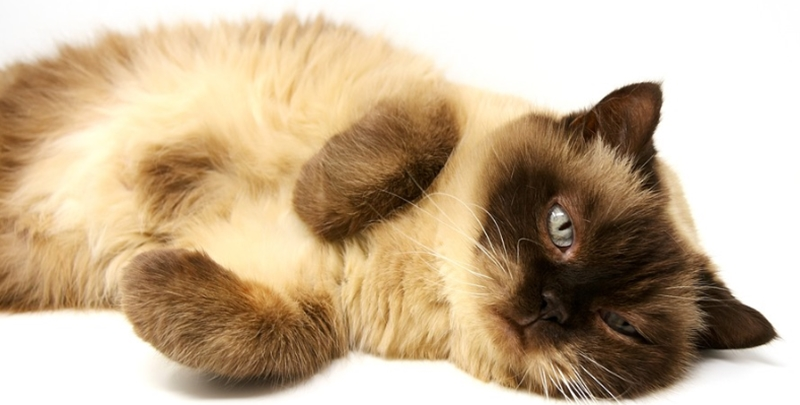
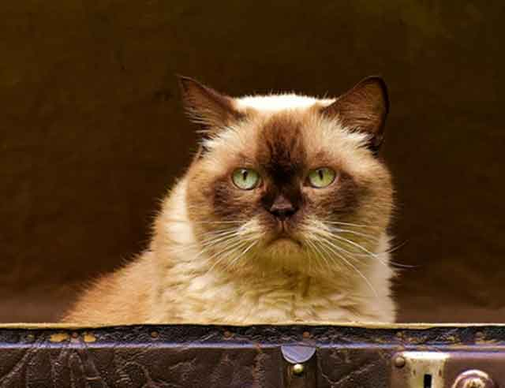

고양이가 스트레스받을 때 보이는 행동!
사람도 스트레스를 받으면 예민해지고 불안을 느낄 때가 있죠. 게다가 스트레스를 받으면 본인이 스트레스를 받은 상태라는 걸 직접 표현할 수도 있습니다. 하지만 동물은 그렇지 않죠. 특히 독립성이 강한 고양이라면 더욱더 그 상황을 알아차리기가 어려울 수 있는 데요. 고양이가 스트레스를 받는다면? 어떤 행동을 보이는지 알아볼게요!
"호기심 가득한 눈으로 살핀다"
불안감을 느끼는 고양이는 눈을 동그랗게 뜨고 주변을 살피는 경향이 있습니다. 주변에 혹시 무슨 일이 일어나지는 않을까 두려움에 동반한 행동이라고 할 수 있는 데요. 고양이가 두리번두리번 주변을 살피는 행동을 한다면, 더는 불안해하지 않도록 안전한 곳에 있다는 걸 인식시켜 주는 게 중요합니다.
"잔뜩 웅크린 행동을 보인다"
평소받 몸을 잔뜩 웅크린 모습을 보인다면 이런 행동 역시 무엇인가를 경계하는 모습입니다. 낯선 공간, 주변의 위협으로부터 피하고 싶을 때 보이는 행동으로 허리를 평소보다 낮췄거나 조심스럽게 걷는 모습을 보인다면, 고양이가 불안해한다는 걸 인식할 수 있어요.
"털이 곤두서 있고 하악질을 한다"
하악질 하는 고양이는 누가 봐도 흥분 상태인 것을 알 수 있습니다. 당연히 불안한 상태라는 것도 알 수 있겠죠. 하악질 하는 고양이는 긴장했거나 두려움, 놀람 등의 행동을 나타내는 데요. 나아가 주변에서 위협을 느끼고 있다면, 하악질을 하기도 합니다.
"몸을 떠는 행동을 보인다"
몸을 부르르 떠는 고양이. 극도의 불안감을 나타내는 모습입니다. 스트레스를 받아 몸을 부르르 떠는 행동을 보인다면 빠르게 안정시키고 증상이 계속된다면, 가까운 병원을 찾아 진찰이나 상담을 받는 것이 좋습니다.
"긴 하울링을 한다"
고양이는 비교적 잘 울지 않는 편인데요. 만약 평소와 다르게 고양이가 계속해서 운다면 집사에게 무엇인가를 원한다는 뜻입니다. 게다가 식욕까지 감퇴한 상황이라면, 불안한 상태인 것은 분명하겠죠? 빠르게 안정을 취할 수 있도록 도와주어야 합니다.
"꼬리를 빠르게 휘휘 젓는다"
고양이 꼬리는 감정을 표현하는 수단이기도 하는 데요. 만약 고양이가 꼬리를 거침없이 좌우로 흔든다면, 불안하거나 현재 스트레스받는 상황임을 알리는 신호일 수도 있어요. 평소랑 다르게 꼬리를 마구 흔든다면, 고양이의 상태를 살펴보시길 바랍니다.

다른 반려동물도 마찬가지겠지만 특히 고양이는 스트레스에 취약한 것으로 알려져 있습니다. 사람에겐 별일이 아닌 일도 고양이에겐 건강상 취약한 일이 될 수 있어요. 평소 고양이가 자주 스트레스받는 것을 표현한다면 조용하고 안정적인 환경을 만들어 주는 것은 어떨까요? 평소 좋아하는 장난감이나 고양이 채취가 남아있는 물건을 곁에 둔다면 더욱 안정적인 모습을 보일 가능성이 크답니다.
[출처] 고양이가 스트레스받을 때 보이는 행동! ｜ 작성자 쿠즈펫